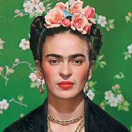

Frida Kahlo
Artista mexicana, uno de los iconos actuales del arte pop latinoamericano y mundial. Su obra pictórica gira temáticamente en torno a su biografía y propio sufrimiento.
Agustina Valdez
Magdalena Carmen Frida Kahlo Calderon nació el 6 de julio de 1907 en Coyoacán, México. Fue la tercera de cuatro hijas de Matilde Calderón de ascendentes indigeno mexicano y del fotógrafo judío alemán Guillermo Kahlo. Sus hermanas mayores fueron Luisa (nacida en 1894), Matilde (en 1899) y Adriana (1902); después de ella nació su único hermano, Guillermo, que sobrevivió solo unos días. En 1908, nació su hermana menor, Cristina.
SU
ENFERMEDAD
Y ACCIDENTE
A muy temprana edad Frida contrajo poliomielitis, dejandole una secuela permanente en su pierna derecha. Siendo una joven de 16 años, cuando realizaba sus estudios en la Escuela Nacional Preparatoria de esta ciudad conoció a Diego Rivera, que estaba pintando su mural "La Creación" en la escuela. Allí tenía un grupo de amigos que se hacian llamar "Los Cachucas" conocidos por su rebeldía politica.
Antes de convertirse en pintora, fue estudiante de medicina, pero sufrió un grave accidente de tranvía donde resultó fatalmente herida; durante su recuperacion es cuando Frida comienza a pintar, años más tarde le mostró sus obras a Diego y el la incitó a seguir. Finalmente ellos se casaron el 21 de agosto del año 1929. La obra de Rivera influenció su trabajo, deseaba como su marido, que su pintura fuera de la evidencia de lo mexicano recurriendo con frecuencia a temas del folcklore y del arte popular de su país. Después introduce en sus obras el factor de lo fantástico que realzan el impacto de su obra, a la que se relacionó con el movimiento surrealista
Frida es ácida y tierna, dura como el acero y delicada y fina como al ala de una mariposa. Adorable como una bella y profunda sonrisa y cruel como la amargura de la vida.
Diego Rivera
Frida es ácida y tierna, dura como el acero y delicada y fina como al ala de una mariposa. Adorable como una bella y profunda sonrisa y cruel como la amargura de la vida.
Diego Rivera
SU VIDA
ARTÍSTICA Y
FALLECIMIENTO
De sus 143 obras, 55 son autoretratos en donde expuso los aspectos dolorosos de su vida, expresa su sufrimiento al estar postrada en su cama con la obra "La columna rota", su dolor ante la incapacidad de ser madre en "Hospital", entre otras. Además Frida fue bisexual y mantuvo romances tanto con hombres como con mujeres. Su matrimonio fue complicado entre otras cosas por las constantes infidelidades de ambas partes. Uno de los peores fue el engaño de Diego con la hermana menor de la artista, Cristina. Ellos se divorciaron en 1939 pero volvieron a casarse en 1940.
Organizó exposiciones en Nueva York (1938) y en Paris (1939) a través de sus contactos con el poeta surrealista francés André Breton. En abril de 1953 expuso por primera vez en la Galeria de Arte Contemporáneo de Ciudad de México.
Frida Kahlo fallece el 13 de julio de 1954 a la edad de 47 años a causa de una trombosis pulmonar. Sus últimas palabras fueron: Espero alegre la salida y espero no volver jamás. El día de su entierro, el cajón fue cubierto con la bandera del Partido Comunista. El matrimonio Kahlo-Rivera fue miembro del Partido Comunista Mexicano. La casa que la pintora habitó durante su vida conyugal con el célebre pintor, fue donada por este a la nación y transformada en el Museo que lleva el nombre de Frida Kahlo.
FRIDA
REFERENTE
FEMINISTA
Fue de las primeras pintoras referentes del feminismo ya que expresó lo femenino desde su punto de vista, rechazando la visión masculina de la mujer en esa época. Ella a pesar de estar casada se mostraba fuerte e independiente, ademas de tener algunos rasgos masculinos como sus prominentes cejas y su bigote. Gracias a sus aportes hoy es considerada un símbolo por mostrar en sus obras la verdadera identidad de la mujer.